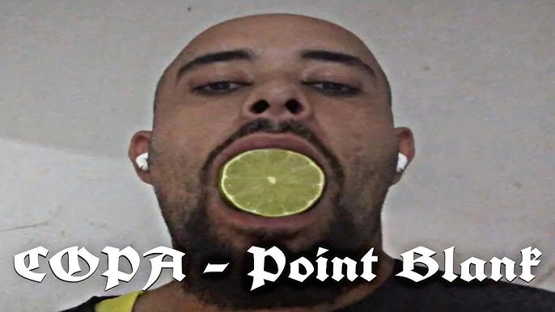

COPA (conhecido nas redes como @copa.gazzz) é um artista brasileiro da cena underground que transita entre trap, cloud rap, emo rap, indie rock e música experimental. Seu som combina produções atmosféricas, letras introspectivas e referências à cultura pop, animes e vivências pessoais, criando uma identidade melancólica e intensa. Entre seus trabalhos de destaque estão Blasfêmia parte 1' sexo, drogas e as neuroses me destruíram por completo (2023), eu mudei muito depois que o meu primeiro cachorro morreu . VOLUME 1 (2024), Volume 4 (2025) e Hotel Okami (2026).
